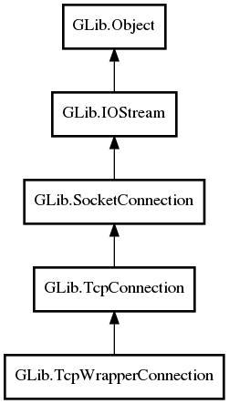

GLib.TcpWrapperConnection Reference Manual
Packages
gio-2.0
GLib
TcpWrapperConnection
base_io_stream
TcpWrapperConnection
get_base_io_stream
TcpWrapperConnection
Object Hierarchy:

Description:
public
class
TcpWrapperConnection
:
TcpConnection
Namespace:
GLib
Package:
gio-2.0
Content:
Properties:
public
IOStream
base_io_stream
{
construct
set
;
get
; }
Creation methods:
public
TcpWrapperConnection
(
IOStream
base_io_stream,
Socket
socket)
Methods:
public
weak
IOStream
get_base_io_stream
()